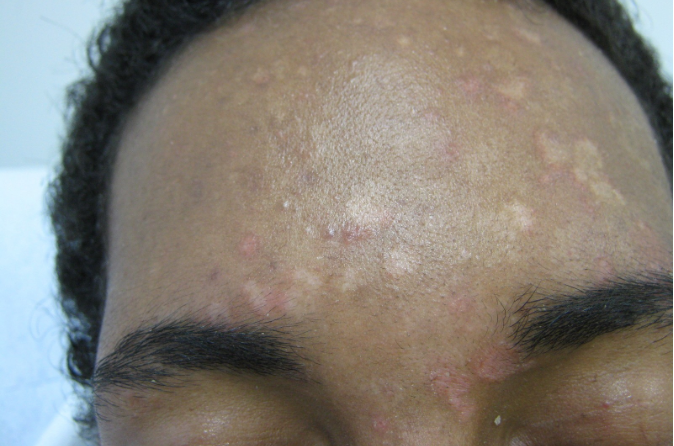
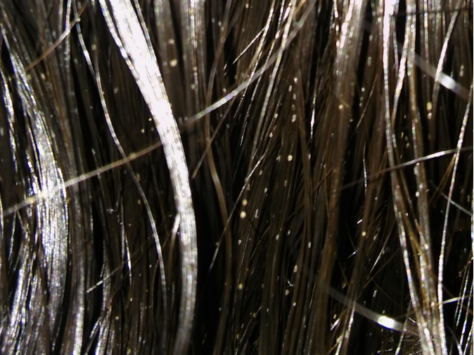
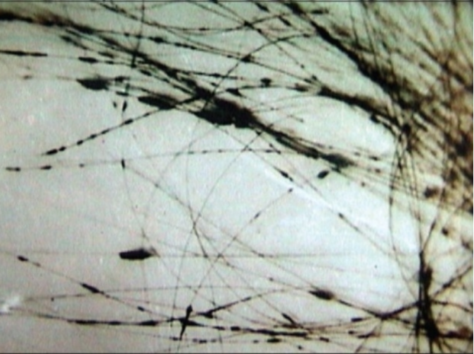

Aula 2
Micoses de implantação
As micoses de implantação, ou micoses subcutâneas, são infecções causadas por fungos introduzidos diretamente na derme ou tecido subcutâneo por trauma penetrante e geram um processo inflamatório granulomatoso. Há casos em que esse trauma não é relatado ou percebido, muitas vezes devido ao grande intervalo de tempo entre o trauma e a percepção das lesões. Em geral, predominam em regiões de clima tropical. A seguir você conhecerá as micoses de implantação mais relevantes no Brasil.
Micoses superficiais
As micoses superficiais são infecções causadas por fungos que invadem as camadas mais superficiais da pele, constituída pela camada córnea e a haste livre do pelo. Geralmente não provocam reação por parte do hospedeiro. As lesões se manifestam como mancha pigmentar na pele ou nódulos nos pelos. A seguir apresentaremos as micoses superficiais de interesse clínico.
• Pitiríase versicolor (PV)
A pitiríase versicolor (PV) é a micose superficial que acomete a camada córnea da pele. Tem distribuição mundial, com predileção para países tropicais e subtropicais. É a micose superficial mais prevalente.
É vulgarmente conhecida por “micose de praia” ou “pano branco”, porque às vezes as lesões são mais evidenciadas após exposição solar.

Micose de praia ou pano branco
A PV é causada por espécies do gênero Malassezia. São fungos lipofílicos e aquelas mais relacionadas ao aparecimento da PV são M. globosa, M. restrita e M. sympodialis.
Embora o gênero Malassezia esteja normalmente presente na pele humana, principalmente na cabeça e tronco, como parte da microbiota natural, certos fatores podem desequilibrar essa relação com o hospedeiro.
A doença tem sinais típicos, que ajudam no reconhecimento. Caracteriza-se por múltiplas máculas, geralmente hipocrômicas, localizadas preferencialmente em regiões seborreicas tais como ombros, tronco superior, face, cervical e apresentando fina descamação furfurácea que indica atividade da doença. As máculas também podem apresentar outras cores (versicolor), tais como castanho ou eritematosa, embora isso seja menos comum. A variante folicular apresenta pequenas lesões na topografia dos folículos pilosos. Afeta a todos, porém mais frequentemente adultos jovens e pós-púberes. O período de incubação da PV não é definido.
São vários os fatores que favorecem a conversão da forma de levedura para micélio (hifas/pseudo-hifas), que são capazes de invadir a pele.
Fatores Externos

Ambiente quente e úmido, hiperidrose, aplicação de emolientes oleosos, entre outros.
Fatores Relacionados ao Hospedeiro
Seborreia, distúrbios endócrinos, desordens neuropáticas, gravidez, uso de anticoncepcionais orais, uso de corticosteroides e desnutrição.
Durante a puberdade, as alterações fisiológicas dos lipídios favorecem a multiplicação do fungo Malassezia sp. Isso aumenta o risco de desenvolver PV, tornando essa micose mais comum em adolescentes.
Existe suscetibilidade genética no aparecimento da PV. Nessas pessoas pode evoluir por surtos, com períodos de melhora e piora, podendo se tornar recidivante ou crônica.
• Piedra branca
A piedra branca é uma micose superficial, de caráter crônico, que acomete a cutícula da haste livre do pelo. Tem distribuição mundial, com preferência para países tropicais e subtropicais. Seu agente etiológico é conhecido por leveduras do gênero Trichosporon. As espécies mais frequentemente relatadas são: T. asahii, T. inkin, T. cutaneum, T. ovoides e T. loubieri.
Esses organismos podem se encontrar no ambiente (solo, água, plantas) e fazer parte da microbiota transitória humana, principalmente a cutânea. Sua forma de transmissão pode ocorrer com o compartilhamento de adereços de cabelo. Porém, sua transmissão não está relacionada a hábitos de higiene e nível socioeconômico.
Ela não possui um período estabelecido de incubação. Sua forma clínica ajuda no reconhecimento. Apresenta nódulos amolecidos claros como os da imagem a seguir. São assintomáticos, aderidos à haste livre dos pelos e podem ser facilmente removidos. Podem atingir qualquer área pilosa, mas costumam se localizar em regiões úmidas do corpo. Afeta com mais frequência pelos do couro cabeludo e região genitoinguinal. A piedra branca em couro cabeludo ocorre mais em crianças e mulheres, enquanto em adultos jovens a região genitoinguinal é mais frequentemente afetada.

Piedra branca com nódulos claros
Ambientes úmidos facilitam o crescimento dos fungos. No couro cabeludo, cabelos longos, presos por muito tempo e ainda molhados, além do uso frequente de acessórios, cria um ambiente propício para a infecção. Já na região inguinogenital, o suor excessivo e o uso de roupas apertadas, ou que não permitem ventilação, também contribuem para a proliferação dos fungos.
Todas as pessoas estão suscetíveis à infecção. Ter a doença uma vez não garante imunidade, ou seja, ela pode voltar. No caso da piedra branca, a eliminação completa pode ser difícil, com risco de recorrência.
• Piedra negra
Essa é uma micose superficial e de caráter crônico, que acomete a cutícula da haste livre do pelo. Ocorre em áreas tropicais, sendo no Brasil, comum nas populações originárias da Amazônia. Tem como agente etiológico Piedraia hortae.
Clinicamente, a infecção se manifesta por meio de nódulos pretos, rígidos e assintomáticos, firmemente aderidos à parte livre dos fios de cabelo do couro cabeludo. Acomete tanto homens quanto mulheres. Em algumas etnias indígenas, esses nódulos são valorizados culturalmente por seu significado estético.
Essa micose superficial ocorre com mais frequência em regiões de clima tropical úmido, pois o fungo causador habita o solo de florestas e águas paradas próximas a rios. A transmissão acontece por contato com solo ou água contaminados, sendo possível também por meio do compartilhamento de objetos de uso pessoal, como pentes e adereços de cabelo. O período de incubação não é bem definido.

Piedra negra caracterizada por nódulos negros aderidos aos fios de cabelo
Fatores como higiene inadequada, alta umidade, cabelos longos e uso frequente de óleos capilares favorecem o aparecimento da micose. Todas as pessoas são suscetíveis à infecção, e tê-la uma vez não confere imunidade, ou seja, a doença pode ocorrer novamente.
• Tinha negra
A tinha negra é uma micose superficial de caráter crônico, que acomete geralmente a pele das palmas e plantas dos pés. Tem distribuição universal, com predileção para áreas tropicais e subtropicais. Seu agente etimológico é o Hortaea werneckii, embora existam relatos de casos que foram originados por outros fungos demáceos, como Stenella araguata e Scopulariopsis brevicaulis.
O fungo é saprófito na natureza e está presente em solo, plantas, vegetais e madeiras em decomposição. É um fungo de comportamento halofílico, se desenvolvendo em ambientes com altas concentrações salinas.
Acredita-se que a micose seja adquirida pela penetração do fungo na camada córnea, através da pele erosada das palmas das mãos e plantas dos pés. No Brasil, é comum as pessoas se contaminarem em áreas litorâneas.
A infecção não tem sinais típicos, que ajudam no reconhecimento, sendo confundida com outras doenças. A micose se caracteriza-se pelo aparecimento de máculas acastanhadas, de tamanhos variados e limites bem definidos, ligeiramente descamativas e assintomáticas, cuja localização mais comum é a região palmar. Ocorre em crianças e jovens, porém todas as pessoas estão suscetíveis à infecção. O período de incubação não é definido. Ter a doença uma vez não garante imunidade, ou seja, ela pode voltar.
Micoses cutâneas
As micoses cutâneas são causadas por fungos que invadem as camadas da pele (epiderme e derme), e/ou parte intrafolicular do pelo e/ou lâmina ungueal. Geralmente há resposta imune do hospedeiro. As manifestações clínicas dependem do local acometido; isto é, se está na pele, pelo ou unha. Você irá conhecer as micoses cutâneas de interesse clínico.
• Dermatofitoses
São micoses cutâneas causadas por fungos genericamente denominados dermatófitos, que vivem à custa da metabolização da queratina da pele. Têm distribuição mundial.
Os agentes etiológicos são quatro gêneros principais de dermatófitos responsáveis pelas dermatofitoses:
- Trichophyton,
- Microsporum,
- Nannizzia,
- Epidermophyton.
Esses fungos, ao invadir os tecidos queratinizados, desencadeiam uma resposta inflamatória cuja intensidade varia de acordo com o grau de adaptação do agente fúngico ao hospedeiro. São fontes de transmissão:
Fontes de transmissão
ANTROPOFÍLICOS
Transmissão mais comum entre pessoas. Os principais agentes são
T. rubrum, que é o mais
prevalente, T. interdigitale, T. tonsurans, M. audouinii e
E. floccosum.
ZOOFÍLICOS
Transmissão por contato com animais. Compreendem T.
mentagrophytes e M. canis.
GEOFÍLICOS
Transmissão por contato com solo contaminado. Sendo Nannizzia
gypsea, o único
representante.
Tantos os fungos geofílicos, assim como os zoofílicos, provocam maior reação inflamatória no homem do que os antropofílicos. Os fungos dermatófitos exibem um tropismo para as diferentes classes de queratina. Por exemplo, Trichophyton tem preferência para pelo, pele e unha; Microsporum exibe preferência para pelo e pele; enquanto Epidermophyton para pele e unha.
Os dermatófitos podem ter distribuição universal ou restrita a determinadas regiões ou países. Conforme seu tropismo, eles se alojam preferencialmente no solo, em seres humanos ou em animais infectados. A principal forma de transmissão ocorre por contato direto com pessoas, animais ou solo contaminado. Também é possível o contágio por meio de fômites, objetos ou superfícies contaminadas com pelos ou escamas de pele infectada. O período de incubação das dermatofitoses não é bem estabelecido.
As dermatofitoses, também conhecidas como tinhas (ou tineas, em latim), recebem denominação clínica de acordo com a área do corpo afetada. As lesões podem variar bastante, dependendo da região em que se instalam e da capacidade de adaptação do fungo ao hospedeiro.
As principais formas clínicas das dermatofitoses são:
Outras variantes de dermatofitoses são tinha imbricata, tinha granulomatosa, tinha granulomatosa e tinha incógnita, que exibem características próprias.
As dermatofítides e outras reações de hipersensibilidade, também denominadas de “reações de ides” ou mícide, são lesões cutâneas à distância de infecção por dermatófito. A tinha do pé, por exemplo, pode se manifestar com dermotofítides na região lateral dos dedos das mãos.
Embora a dermatofitose seja universal, ela é mais prevalente em áreas tropicais e subtropicais, em clima quente e úmido. Condições socioeconômicas — tipo de calçado, ocupação profissional, imunodepressão, corticoterapia, má higiene etc. — são aspectos para o desenvolvimento da micose. Todas as pessoas estão suscetíveis à infecção. Ter a doença uma vez não garante imunidade, ou seja, ela pode voltar.
• Candidíases cutâneas
Trata-se de uma micose cutânea cosmopolita causada por leveduras do gênero Candida. Nas candidíases cutâneas, Candida albicans é a principal espécie responsável, seguida de Candida tropicalis. Entretanto, outras espécies podem causar a doença.
Saiba mais
A Candida albicans faz parte da microbiota normal do ser humano, que coloniza a mucosa oral e faríngea (80% da população), o trato gastrointestinal e o trato reprodutivo hígido. Existe, em condições normais, um fator sérico natural contra Candida spp. que dificulta a invasão da levedura.
A candidíase não é considerada uma doença contagiosa. Ela se manifesta quando há algum desequilíbrio no sistema imunológico da pessoa, o que permite a multiplicação do fungo e a formação de estruturas chamadas hifas ou pseudo-hifas, responsáveis pelas lesões. O período de incubação não é bem definido.
As formas clínicas mais comuns da candidíase incluem:
Acometem grandes dobras, como axilas, região inframamária, inguinal; ou sulco interglúteo; ou espaços interdigitais das mãos e dos pés. Podem causar prurido, dor e ardência. Caracterizam-se por máculas eritematosas, que podem exulcerar. A presença de papulopústulas satélites nas bordas da lesão e a maceração é bem característica, particularmente nas dobras inguinais.
Mais comum entre o 3º e o 4º mês de vida, mas também pode afetar adultos que fazem uso contínuo de fraldas. As lesões aparecem nas dobras e regiões em contato com a fralda, semelhantes às descritas no intertrigo.
A paroníquia consiste em lesão intensa e dolorosa — edema eritematosa periungueal —, com saída de material purulento. Acomete a borda proximal da unha, produzindo onicólise e unhas de coloração branco-amarelado. A onicomicose caracteriza-se clinicamente por descolamento e espessamento da lâmina ungueal, podendo também levar à distrofia ungueal.
A candidíase não é contagiosa, mas pode surgir quando há queda da imunidade ou condições que favorecem o crescimento do fungo, como calor, umidade, uso de antibióticos ou doenças como o diabetes.
• Dermomicoses
São micoses cutâneas causadas por fungos filamentosos não dermatófitos (FFNDs), que constitui um grupo heterogêneo de fungos geralmente saprófitos, mais implicados em processos infecciosos dermatológicos. Diferentemente dos fungos dermatófitos, eles não são considerados queratofílicos, preferindo a matriz/estrutura intracelular ou a queratina desnaturada, nas áreas afetadas por trauma ou doença.
Várias espécies de FFNDs podem provocar dermatomicoses. São elas:
- Fusarium spp.
- Aspergillus spp.
- Penicilium spp.
- Acremonium spp.
- Scopulariopsis spp.
- Neoscytalidium spp.
Os fungos filamentosos não dermatófitos (FFNDs) são geralmente geofílicos, ou seja, vivem no solo em forma de saprófitos — alimentando-se de matéria orgânica em decomposição. Por estarem naturalmente presentes no ambiente, especialmente no solo, não são considerados agentes de doenças contagiosas. O contato direto com a terra, o uso de calçados abertos e traumas nas unhas dos pés são fatores que favorecem o aparecimento da infecção.
As lesões causadas por FFNDs são muito semelhantes clinicamente às dermatofitoses, afetando principalmente as regiões plantares e as unhas dos pés. Raramente envolvem a pele glabra ou os pelos propriamente ditos. O período de incubação da infecção não está bem definido.
Alguns grupos estão mais predispostos à infecção, como mulheres, idosos (acima de 60 anos) e pessoas com comorbidades como diabetes mellitus, hipertensão arterial, doenças vasculares periféricas, hipertireoidismo ou infecção pelo vírus HIV. Vale destacar que, assim como em outras micoses superficiais, ter a infecção uma vez não gera imunidade, ou seja, a doença pode voltar.